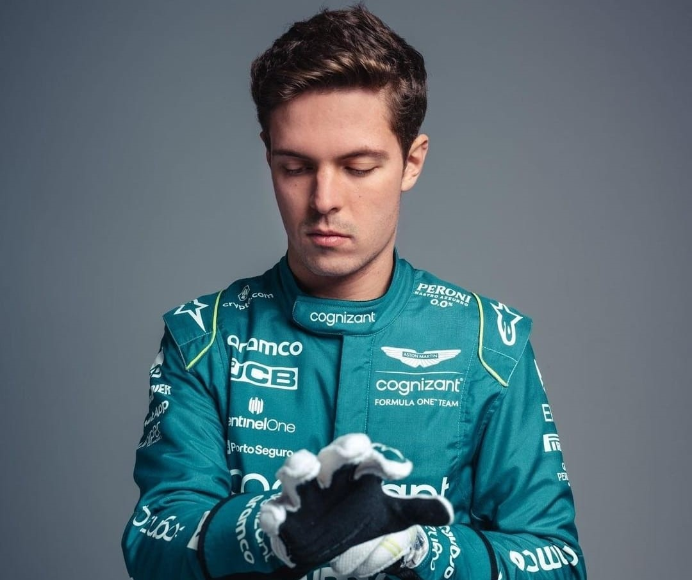

Foto: Divulgação Aston Martin
-21/02/2023-
Vamos falar de Felipe Drugovich?
Ou melhor do Drugo na pré-temporada de 2023.
Quem não esta feliz com isso ou é doido ou não é Brasileiro, simples assim.
Mas precisamos ser sinceros, não é somente talento ou desempenho que leva e mais ainda mantem um piloto na F1, seja no grid, seja na reserva ou no desenvolvimento dentro de uma equipe.
O que mantêm um piloto, ou melhor faz um piloto aparecer, é o famoso pix, como diz um jornalista amigo meu, e quem não vê isso ou é ingênuo ou mal caráter.
Tudo estava sim se desenhando para o Alonso correr os três dias, mas papai Stroll não dá ponto sem nó e com certeza ele deu a opção, e não foi diretamente para o Drugo, assumir esse assento.
E gente, não é desmerecer o talento do nosso Brasileirinho, porque sim estou muito feliz com a oportunidade, mas temos que manter os pés no chão de que ainda teremos que correr muito atrás para ter um piloto no grid da principal categoria do automobilismo mundial.